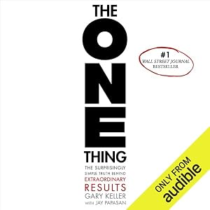

The ONE Thing
The Surprisingly Simple Truth Behind Extraordinary Results
On this site Goal Setting & Priorities
Extraordinary results come from extreme focus — doing less by narrowing to the single most important task instead of spreading across many.
This is an audiobook for busy people. If you want less on your plate and more for your life and career, tune in to this #1 Wall Street Journal best seller...
Publisher description